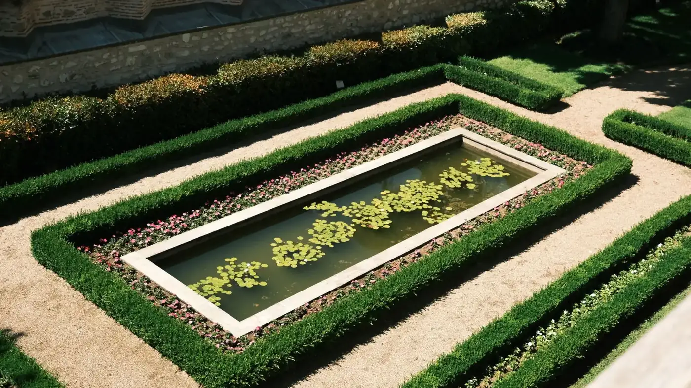
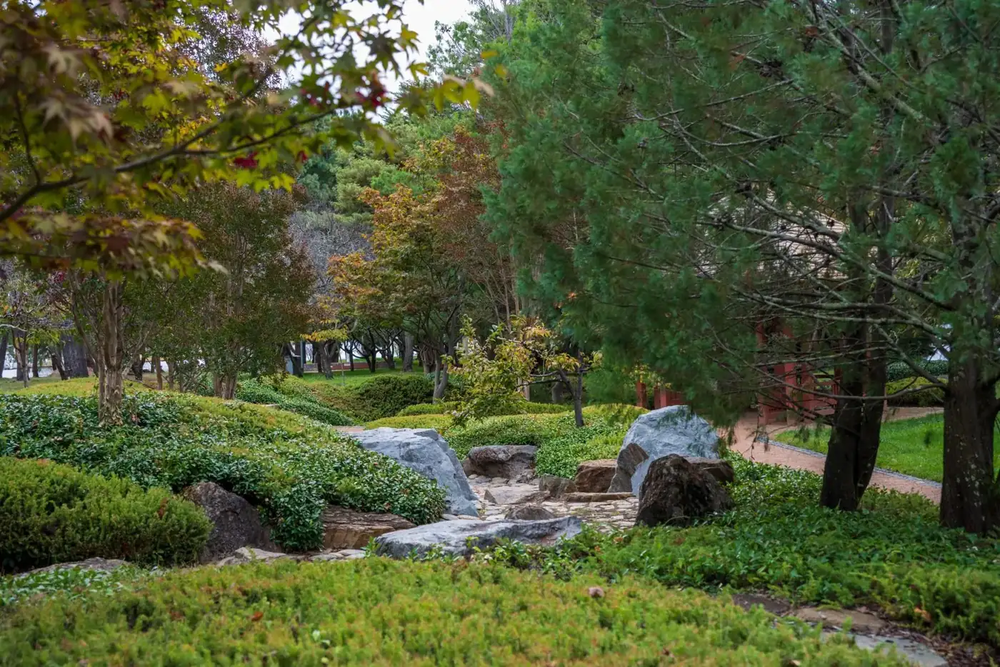
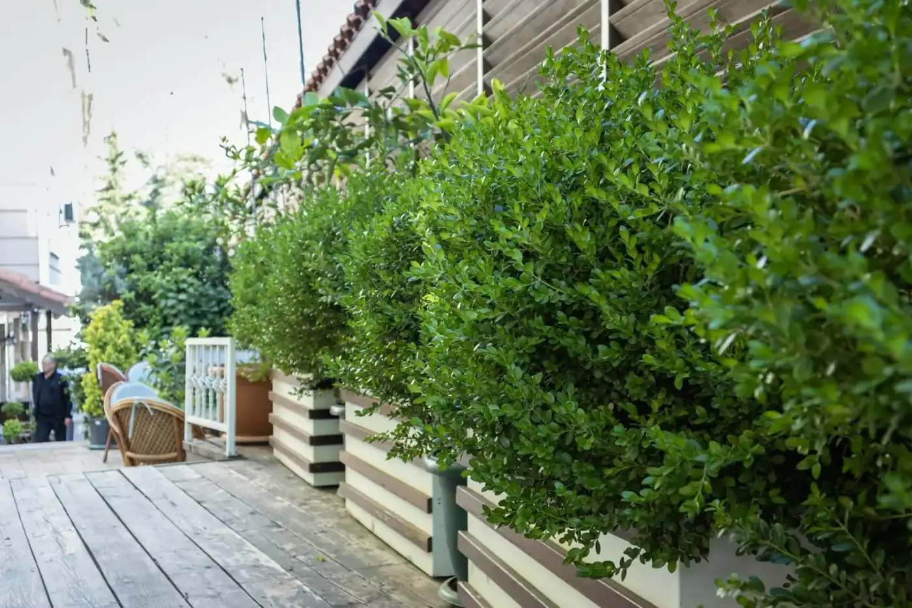
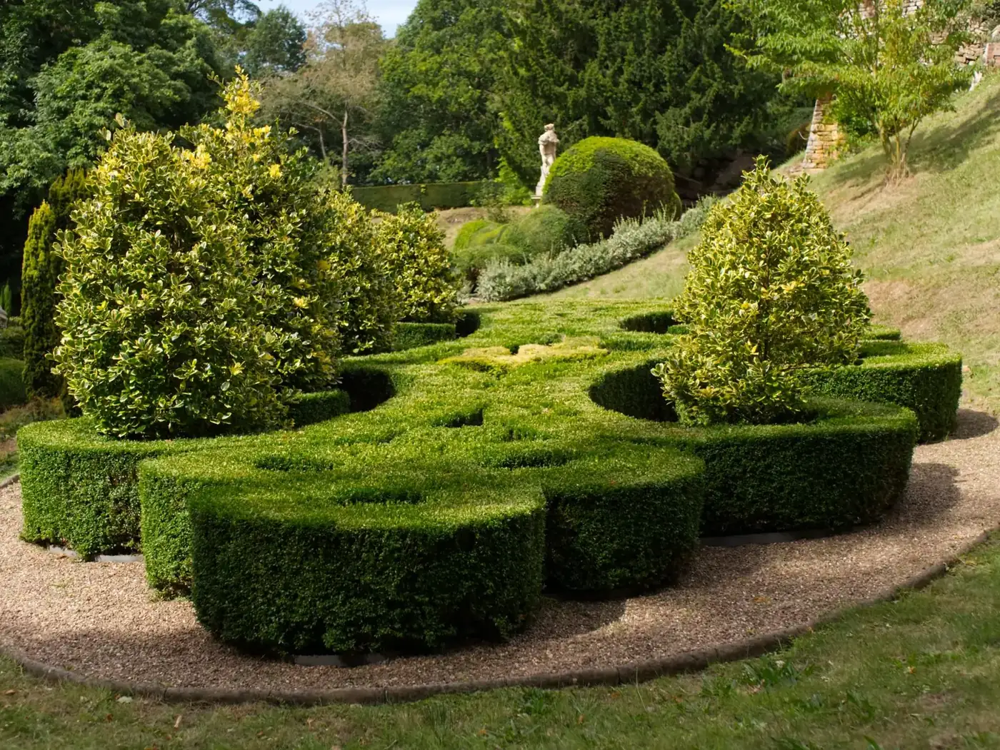
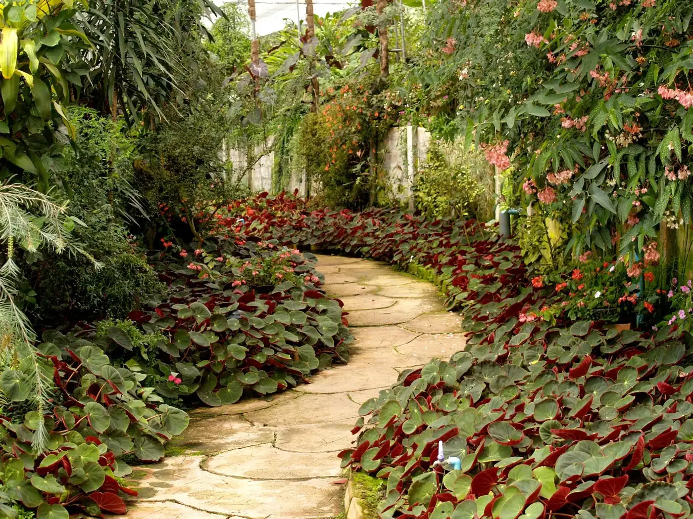
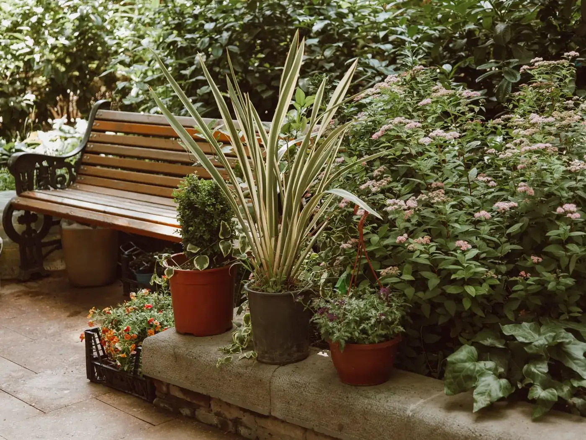

Garden maintenance
Regular care that keeps your garden thriving all year.
The Gardener & Co · Gold Coast & Byron Bay
Garden maintenance, Lawn care, Landscape design — Gold Coast & Byron Bay.
What we do
Regular care that keeps your garden thriving all year.
Mowing, edging and lawn health.
Designs that turn ordinary spaces into outdoor retreats.
Planting and floral displays that transform a yard.
About
The Gardener & Co. proudly serves the Gold Coast and Byron Bay. From expert lawn care to landscape design, the team is dedicated to enhancing every corner of your garden so it thrives all year round.
Gallery
Sample imagery from Pexels standing in for The Gardener & Co projects — to be replaced with real project photos.






Reviews
Service area
Enquire
Tell us about your project and we’ll get back to you.
Email: thegardenernco@gmail.com
What this preview improves